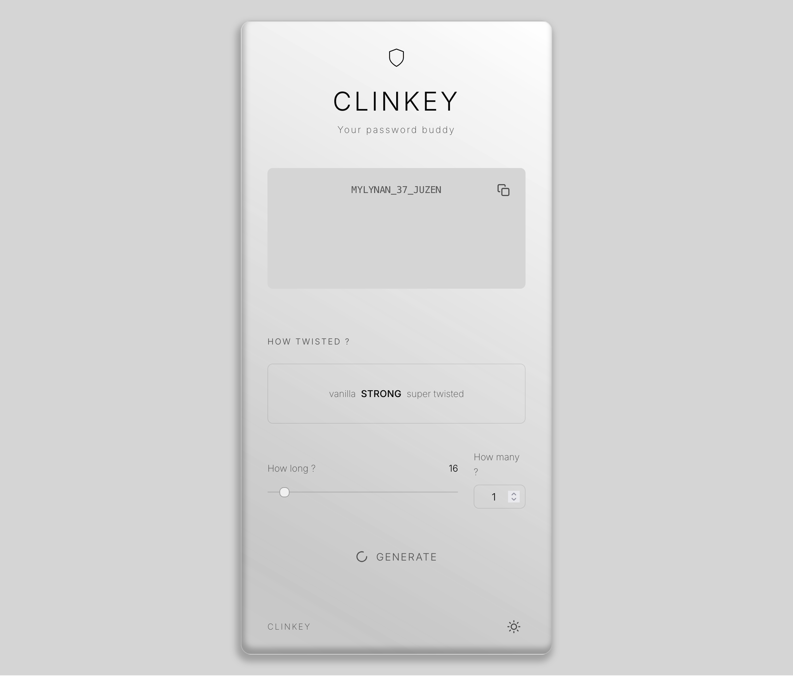

Clinkey,
l'assistant mots de passe.
Clinkey est un générateur de mots de passe des plus simples.
Proposant de générer des mots de passes robustes de manière aléatoire, en respectant les paramètres sélectionnés par l'utilisateur.
Il est possible d'obtenir un mot de passe entre 16 et 128 caractères, composé uniquement de lettres organisées en syllabes prononçables,
d'y ajouter des chiffres et des caractères spéciaux.
// Paramètres
- > Nombre de mots de passe à générer (1 à 1000)
- > Longueur du/des mots de passe (8 à 128 caractères)
- > Vanille = Que des lettres
- > Strong = Lettres + Chiffres
- > Super Twisted = Lettres + Chiffres + Caractères spéciaux
- > Composé de syllabes prononçables
- > Accepte un nombre très élevé de mots de passe
// Thème Light
// Thème Dark